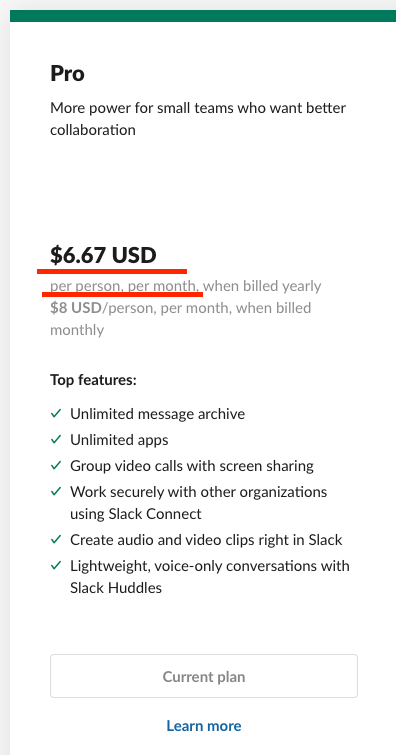
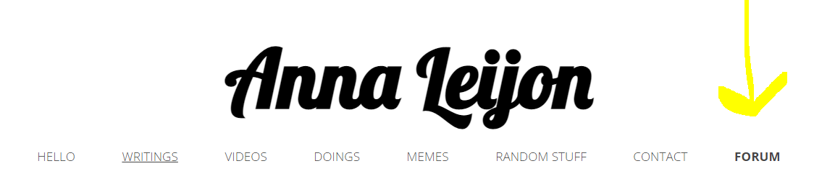

Varför har jag startat forumet “Frilans & Tech”?
Jag har länge tyckt att det saknas transparens i framförallt konsultbranschen. Företag generellt, och konsultbolag specifikt, har ett informationsövertag över individen. Jag tycker att det är sorgligt om det är ren okunskap som hindrar individer från att uppfylla sina drömmar. Jag vill att alla ska fatta medvetna beslut i så stor utsträckning som möjligt och information ska aldrig, ALDRIG, i dagens moderna samhälle, kunna vara en competitive advantage över individen. Vi alla är individer och jag hoppas att de allra flesta vill jobba för individens bästa. Vi har åtminstone alla TEKNISKA förutsättningar att, vid det här laget, undvika att information undanhålls från individen. Jag har blivit lite smått passionerad av att brygga det kunskapsgapet. Jag har rent av kallats för “galjonsfigur” och “mother of brokers” (här refererar brokers till konsultmäklare) av mina läsare. Kunskapsgapet som jag skriver om är alltså vetskapen om att upplägget “egenföretagare och frilanskonsult” är ett alternativ till att “vara anställd av någon annan”. Många vet inte ens om det här idag. Jag tycker att ALLA ska göra ett aktivt val huruvida de vill vara anställda av sig själva eller av någon annan. Av den anledningen ska informationen vara fritt tillgänglig för alla alltid och på ett enkelt sätt.
Länk till forumet: annaleijon.discourse.group
Nu har jag motiverat varför informationen behövs, men hur är det egentligen med befintliga forum och existerande informationskanaler? Räcker inte de? Tillgängliggörs inte informationen som behövs på ett tillfredsställande sätt där redan? Enligt mig, nej. Här sammanfattar jag även problemen som jag ser med de etablerade alternativen till mitt forum och som bidragit till min motivation till att starta det.
Problem med nuvarande/ etablerade alternativ
- De flesta alternativen finns på sociala medier i form av grupper på Facebook, Linkedin eller liknande och det innebär både en inlåsnings- och utlåsningseffekt.
- Det finns också ett alternativ i chattcommunityt Slack, men det Slack har börjat göra på senaste tiden är att deras gratisversion låser in äldre information. Det går inte att söka på eller hitta äldre information om man inte betalar premium. Premium är väldigt dyrt - närmare bestämt cirka 70 kronor per månad per användare. Det är helt sinnessjukt dyrt. Jag är ganska säker på att om de fortsätter gapa såhär för mycket så kommer de mista hela stycket. Ett öppet chattforum på webben är helt klart ett alternativ till Slack för icke-kommersiella verksamheter.

- Varken i sociala medier eller i Slack går det att söka via Google och hitta svar. Man måste redan vara inbjuden (och veta om att grupperna existerar) för att överhuvudtaget kunna söka och hitta svar, men det är ju på Google de allra flesta börjar.
- Som jag skrev i ovan punkt så måste du vara medlem/bli inbjuden/veta om att det finns en grupp från första början för att kunna ställa din fråga eller leta bland tidigare svar för att hitta den information som du är ute efter, vilket jag anser är negativt. Alla får inte vara medlemmar heller alla gånger. Vissa har till och med ansökningsprocesser och annat avancerat upplägg. Jag har också sett forum som enbart tillåter kvinnor vara med, exempelvis. Det tycker jag inte heller passar sig om man vill skapa ett sunt debattklimat där alla är välkomna och kan diskutera fritt. När det kommer till ämnena frilans & tech ser jag inte att någonting är exklusivt för endera kön och skulle det finnas det så gör det ju ingenting om det ändå diskuteras fritt, tycker jag.
- Ett problem med de etablerade alternativen är hur man får in nya medlemmar och perspektiv. Hur ska gruppen/forumet hållas fräscht och föryngras automatiskt? På sociala medier känns det nästan som att alla grupper blir en filterbubbla som förstärks allt mer istället och åsikterna blir allt mer extrema. Det finns också en ålders- och intressediskrepans bland folk som är inne på olika sociala medier, vilket förstärker den självförstärkande effekten ännu mer.
- Det är många som försöker kapitalisera på sina forum/grupper på sociala medier. “Frilans & Tech” kommer aldrig göra det. Forumet finns till för “the greater good”. Jag kan faktiskt inte låta bli att bli irriterad på vissa Facebook-grupper. Jag har sett folk som har startat företag baserat på sin Facebook-grupp och kallar sig “VD för X” om Facebook-gruppen heter X. De har alltså börjat försöka kapitalisera på gruppen och är ofta inte öppna med det till sina medlemmar. De är en kreativ och icke-transparent affärsmodell samt en konsekvens av “peak-social-media”, som jag tror har skett och som jag kommer att prata om senare i artikeln, men det är ingenting som jag vill bidra till och inget sätt som jag vill jobba på. Forum borde vara objektiva och oberoende - såsom var tanken med Internet från början. Är det ett företag som driver forumet är det definitivt inte oberoende och objektivt längre. Det är viktigt att vara skeptisk om det är ett företag som ligger bakom gruppen och som kanske har vissa incitament att få det att verka på ett visst sätt. Vissa grupper har incitament att verka mer som ett forum än vad de i själva verket är. De är ofta medlemsgrupper och du betalar kanske med din data eller genom att dyka upp på deras sponsrade träffar. De tjänar då pengar på dig och det är du som är produkten. Jag är inte emot medlemsgrupper i sak, men de ska vara transparenta med att de inte är ett forum och att det är ett företag som ligger bakom dem om det är det.
- Förutom att du måste ansöka om att få bli medlem många gånger så finns det ofta också jobbiga regelverk, processer och godkännanden för att få posta saker och det kan ta väldigt lång tid att få sitt inlägg godkänt. När det väl är godkänt är det kanske inte aktuellt för dig längre. Du kan dessutom vara alldeles säker på att sådant som kritiserar den egna gruppen och företaget bakom INTE kommer att bli publicerat.
- Alternativen har faktiskt också dålig användarupplevelse/UX, även om det är ett subjektivt och mindre viktigt argument. Facebook är otroligt buggigt, exempelvis.
Mina problem i nuläget
Förutom dessa generella problem som jag har listat ovan så har även jag vissa personliga problem som motiverar mig till att starta ett eget forum ytterligare. De är:
- Att jag får många mail från olika personer som frågar om samma saker.
- Att jag blir kontaktad i många olika kanaler - E-mail, Facebook, Linkedin, Instagram och så vidare. Om jag får vara själviskt så vore det skönt för mig att ha allting samlat någonstans och att jag kan referera alla till ett och samma ställe istället.
- Att jag också är lite mer ideologiskt driven till att starta forumet. Som det går att utläsa i den här artikeln är jag lite mer på Matt Mullenwegs (grundare av Wordpress) än Mark Zuckerbergs (grundare av Facebook) sida när det kommer till hur ett optimalt internet borde ser ut. Även om jag inte är något vidare superfan av Wordpress så tror och hoppas jag, liksom Matt, att sociala mediers inflytande och användning typ har peakat (peak-social media) vid det här laget och att vi förhoppningsvis kommer att pendla tillbaka mot ett mer decentraliserat och öppet internet. Jag revolterar tillbaka till 90-talet i internets vagga och med alla underbara forum som startades då. Vi var någonting på spåren då som jag tycker att vi ska försöka plocka upp igen. Med andra ord är jag även rent ideologiskt för ett öppet, fritt, anonymt (om man vill) och decentraliserat informationskluster istället för ett centraliserat, plattformsberoende, data-hoardande och data-vidaresäljande, överannonserat och (snart) betal/reklamväggsinlåst informationskluster.
Lösningsförslag
Givet allting som jag har skrivit ovan, på vilka sätt löser då det forum som jag har skapat, Frilans & Tech, alla dessa problem?
- Det är plattformsoberoende och går att accessa i vilken webbläsare som helst och i vilket device som helst.
- Det är helt öppet och tillgängligt samt går att söka på på webben.
- Jag kommer att se till så att informationen sparas för alltid (men du själv får såklart alltid radera dina egna grejer, om du vill).
- Allting kommer också vara samlat på ett enda ställe och vara helt oberoende av alla sociala plattformar.
- Det kommer inte krävas någonting mer än en mailadress och ett alias för att bli medlem. Mailadressen syns endast för admin och alias kan du ju hitta på. Om du skapar en anonym mailadress och alias kan du med andra ord vara helt anonym. Det finns faktiskt många som skriver till mig personligen och säger att de inte vågar gilla, kommentera eller dela mina inlägg om frilansande för att de är rädda för att deras chef eller kollegor har koll på dem på sociala medier. Det tycker jag är helt fruktansvärt.
- Det ska vara ett minimalt antal regler och extremt enkla sådana.
- I forumet “Frilans & Tech” finns en egen tråd som handlar om forumet självt för att säkerställa maximal transparens och högt i tak.
Mitt tillvägagångssätt
När jag började gå i de här tankebanorna om att jag ville starta ett forum så gjorde jag lite research och kollade på vilken lösning andra etablerade forum hade. Jag såg att några andra använde sig av Discourse. Discourse är open source, men själva hostingen kostar. De har dock en gratisversion för non-profit-forum som man kan få om man skickar in en bra motivering. Tydligen var min motivering tillräckligt bra för jag fick deras lösning och hosting helt gratis. Sedan, eftersom min hemsida redan har rätt bra ranking, får bra med trafik organiskt och handlar om de här ämnena så har jag infört en länk till forumet uppe i huvudmenyn. Jag ska också presentera forumet på min förstasida och på mina artiklar (där det är relevant). På så sätt hoppas jag att folk kommer att börja hitta dit.

Avslutningsvis
Nu har jag förklarat för er vad min motivation, vision och mitt tillvägagångssätt har varit. Hur motiverad jag än är så räcker dock inte det för att det ska ta fart, såklart. Det hänger ju på att folk ställer frågor och skriver svar. Jag vet att jag kommer att försöka svara på allting som skrivs där, men det handlar också om att folk ska ställa frågor. Som en start har jag skrivit frågor och svar till mig själv (haha) och känt mig lagom schizofren, men jag vet inte hur man annars får igång ett forum. Någonstans måste jag ju börja :) Jag skulle definiera forumet som lyckat om det har återkommande användare och att folk faktiskt hittar svar på sina frågor där.
Det känns roligt att försöka starta ett forum. Det är en ny “first” bland allt annat som jag också har gjort. Det känns som en ny era. Oavsett hur det går kan jag i varje fall säga att jag försökte. Huruvida jag lyckas eller inte är en annan fråga. Ser jag ett problem försöker jag lösa det. Huruvida det blir lyckat hänger inte på mig, utan på er. In och läs, ställ frågor och skriv svar ;)
Vi har också en Slackgrupp för frilansare i Sverige som heter Frilansare Sverige, men dess målgrupp är etablerade frilansare. Där kan jag tyvärr inte bjuda in alla aspirerande frilansare för det skulle urvattna communityts syfte, men om du är frilansare får du gärna maila mig om du vill ha en inbjudan. Nu har jag försökt skapa ett alternativ till den gruppen för alla som inte har tagit steget än.
Tack på förhand och har ni några allmänna frågor (som någon annan också skulle kunna få nytta av att läsa i framtiden) är ni välkomna att skriva i forumet Frilans & Tech. Om ni har mer personliga frågor får ni självklart också fortfarande maila mig på: anna@annaleijon.com
/Anna Leijon


NEWS LETTER
By subscribing, you will get notified when my next content is published before everyone else.
By subscribing, you will get notified when my next content is published before everyone else.